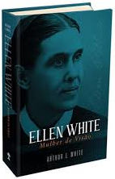

Ellen G. White (1827-1915) foi uma escritora adventista norte-americana, uma das pioneiras da Igreja Adventista do Sétimo Dia. Escreveu mais de cinco mil artigos e quarenta livros.
Ellen Gould Harmon e sua irmã gêmea Elizabeth nasceram em uma fazenda no nordeste dos Estados Unidos, na vila de Gorham, próximo a Portland, Maine, Estados Unidos, no dia 26 de novembro de 1827.
Os Adventistas do Sétimo Dia creem que Ellen White foi muito mais que apenas uma escritora talentosa
creem que ela foi apontada por Deus para ser uma mensageira especial, a fim de atrair a atenção de todos para as Sagradas Escrituras, e ajudá-los a se prepararem para a segunda vinda de Cristo. Desde os 17 anos de idade até a ocasião de seu falecimento aos 87 anos, Deus lhe concedeu cerca de 2000 sonhos e visões. As visões variavam em duração, podendo ser de menos de um minuto até cerca de quatro horas. O conhecimento e conselhos recebidos através dessas revelações foram por ela escritos, a fim de serem compartilhados com outros. Assim, seus escritos são aceitos pelos Adventistas do Sétimo Dia como inspirados, e a qualidade excepcional dessas obras é reconhecida mesmo por leitores ocasionais.
Movimento Millerita e o Grande Desapontamento❗
Entre 1831 e 1844, William Miller – um pregador batista, após estudar a Bíblia, chegou à conclusão que Jesus Cristo retornaria à Terra entre a primavera de 1843 e a primavera de 1844.
O período passou e nada aconteceu.e outros pastores voltaram novamente ao estudo da Bíblia para descobrir o erro. Chegaram à conclusão que Jesus retornaria em 22 de outubro de 1844. Quando Jesus não apareceu, os seguidores de Miller experimentaram o que veio a se chamar “O Grande Desapontamento.”
Início do ministério
Em dezembro de 1844, Ellen teve sua primeira experiência visionária. Enquanto orava, o poder de Deus desceu sobre ela e rodeada de luz sentiu-se elevada acima da Terra. Várias visões se seguiram, mas temendo uma reação negativa ela evitou compartilhar com a comunidade Milerita.
As notícias de suas visões propagaram-se e em seguida Ellen fez diversas viagens a fim de pregar suas experiências aos grupos de seguidores Mileritas. Ela dizia que estava envolvida por uma luz brilhante e sentia a presença de Jesus e de anjos que lhe mostravam eventos e lugares e lhe passava orientações valiosas.
Crenças fundamentais dos adventistas: O Batismo
Batismo simboliza morrer com Cristo e ressuscitar pelo poder de Deus
Na Igreja Adventista, os batismos envolvem novos crentes sendo totalmente imersos na água e imediatamente trazidos de volta. Esse movimento de estar totalmente submerso na água e depois voltar para fora simboliza a morte e o sepultamento de Jesus Cristo. Quando alguém sai da água, é simbolicamente elevado a uma nova vida em Cristo. É uma parte emocionante e importante da vida de um novo cristão.
Colossenses 2:12 explica o batismo assim: “tendo sido sepultados, juntamente com ele (isto é, com Jesus), no batismo, no qual igualmente fostes ressuscitados mediante a fé no poder de Deus que o ressuscitou dentre os mortos”.
Embora seja apenas o sangue de Jesus que pode nos salvar, quando somos batizados, declaramos publicamente nossa fé e obediência a Ele. Estamos declarando abertamente nosso compromisso de seguir a Jesus e dizendo: "Sei que sou um pecador que precisa de um Salvador e escolho hoje ser um seguidor de Cristo".
Jesus é a razão de todas as crenças adventistas
Jesus é a razão de todas as nossas crenças na Igreja Adventista do Sétimo Dia, incluindo o batismo por imersão. É um passo importante na vida de um crente e motivo para celebrar, porque eles estão declarando sua intenção de seguir a Jesus - e somente por meio Dele podemos encontrar liberdade, cura e esperança.
Com respeito à importância do batismo, Ellen White escreve: "A cerimônia do batismo é solene. Homens e mulheres são batizados em nome do Pai, do Filho e do Espírito Santo. Isso significa que os três maiores representantes da autoridade celestial contemplam o serviço batismal e ouvem os votos que são feitos por agentes humanos para andar daqui em diante em novidade de vida. Ao fazer os votos batismais, o homem se une aos mais altos poderes nas cortes celestiais. Ele se compromete a viver a vida que Cristo viveu enquanto esteve nesta terra. E Cristo, de Sua parte, cumpre todas as promessas que Ele fez em Sua Palavra. Ele molda o caráter de cada um que segue Seus passos. Maravilhosa, maravilhosa é Sua obra em favor dos pecadores!" (17 LTMS, MS 57, 1902, par. 26 - Tradução Livre). Que maravilhosa citação! Ela move meu coração e espero que toque o seu também!
O que a Igreja Adventista do Sétimo Dia pensa sobre Ellen White?
É essencial compreender como os adventistas oficialmente enxergam os escritos de Ellen White, considerados importantes para a organização.
A Igreja Adventista, como não poderia ser diferente, valoriza a voz dos profetas bíblicos, e, consequentemente, tem um lugar especial no ministério de Ellen G. White. Prova disso é nossa crença número 18, que tem como título: O dom de profecia. E por que valorizamos a voz dos profetas? Porque Deus assim quer e porque precisamos deles!

Os escritos de Ellen White não constituem um substituto para a Bíblia. Não podem ser colocadosdos no mesmo nível. As Escrituras Sagradas ocupam posição única, pois são o único padrão pelo qual os seus escritos – ou quaisquer outros – devem ser julgados e ao qual devem estar subordinados.
Como se nota, a Igreja Adventista não tem dúvidas a respeito do dom de profecia manifestado na senhora Ellen G. White. De fato, “os adventistas do sétimo dia consideram que os escritos de Ellen G. White são uma manifestação do Espírito de Profecia. Por vezes, isso tem sido contestado, mas está essencialmente correto se for bem entendido como a obra do Espírito Santo e não se limita exclusivamente ao ministério ou aos escritos de Ellen G. White
Fonte: Notícias Adventistas
Aceitação✅ e rejeição❌
Obviamente, ter uma postura oficial clara não é garantia de ausência de conflitos. Com Ellen G. White não foi diferente. Ao longo de seu septuagenário ministério de escritora e palestrante, ela enfrentou dúvida e rejeição, tanto por parte de membros adventista como de pessoas que não pertenciam à denominação.
As duas principais acusações feitas são direcionadas a seu dom profético e a validade e ou autenticidade de suas orientações. Em resumo, autores que a criticam objetivam diminuir seu papel na denominação, desmerecer a validade de seus ensinamentos, ou mesmo desqualificar seu papel teológico na Igreja. Entretanto, tudo isso é contestado pelos mais importantes acadêmicos adventistas, os quais continuam dando crédito à escritora.
Por exemplo, George Knight afirma que “sem dúvida, Ellen G. White [...] tem sido a adventista do sétimo dia de maior influência na história da igreja”.
O teólogo Herbert Douglas, profundo conhecedor das obras da escritora, assim sintetiza sua postura a respeito do papel de White: “a tentativa, por parte de alguns, de louvar Ellen White por suas contribuições devocionais, mas negar-lhe o papel de mensageira teológica, separa-lhe a vida de seu ministério. Sua contribuição teológica é precisamente a razão por que os adventistas têm tido um integrado programa mundial de evangelismo, educação e ministério de saúde”.
.jpg) Biografia de Ellen G. White📚
Biografia de Ellen G. White📚